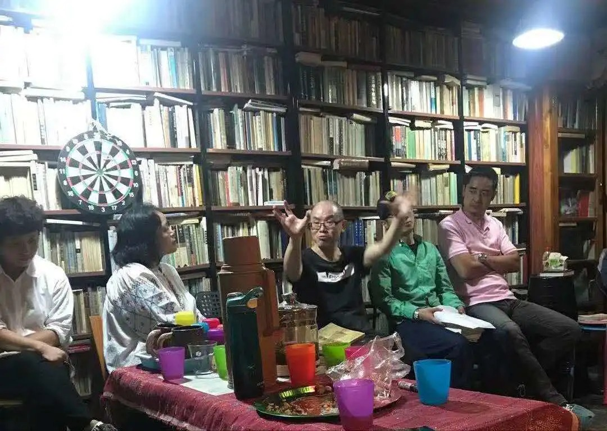
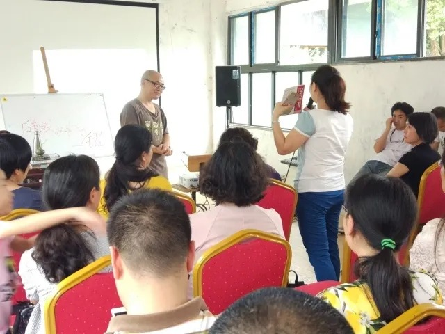
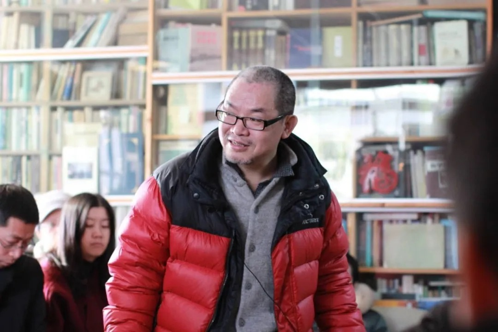

作者： 方舟 方舟雅歌
三启学会系列访谈之-对话冉云飞
凌晨一点多收到冉云飞发来信息：
方舟姐妹：近好。主日敬拜毕，就一直忙着回你所提的问题，终于在这万籁俱寂、神却依旧大能护理的时刻回答完毕，字数大约上万字。答之前我向神祷告，将以祂满意、让祂鉴察我内心为尺度，来回答你们。愿神悦纳，也能有副你们的雅望。愿神赐福你们的服侍，也赐福我们在国度里面的同工。冉云飞问安
“冉云飞问安”，这五个字是他每一次回复信息的结束语，无论私聊还是群聊。
若非囿于疫情，访谈必定是面对面地进行。
在采访提纲发给冉云飞以后，他在朋友圈发了一段文字：
非常感恩，正在以罪人与知识分子的身份接受这个采访，问题尖锐，直抵福音对罪人重锤的核心。愿神赐福这个系列访谈，得着更多刚硬的知识分子及其他人。
有人评价说，冉云飞是刚硬自义的读书人真正被主得着，并且变得柔和、谦卑有智慧的罕见典范。我想一方面是因为他的生命的确发生了翻转和更新，另一方面是他在信主前格外的顽梗，导致前后落差巨大的缘故。
从冉云飞的回应里，感觉他的确很骄傲，但也确实很谦卑。前者是就本性层面的冉云飞而言，后者是就灵性层面的冉云飞而言。这就是基督信仰的奇妙，它不仅在知识方面能彻底翻转人，更能在生命和生活方面真正更新人。
冉云飞，基督徒、作家、学者。生于酉阳，1987年毕业于四川大学中文系，长居成都。现供职于某杂志社。先后著有《尖锐的秋天：里尔克》《手抄本的流亡》《沉疴：中国教育的危机与批判》《从历史的偏旁进入成都》《陷阱里的先锋：博尔赫斯》《庄子我说》《像唐诗一样生活：中国人心灵栖息的诗意追寻》《通往比傻帝国》《吴虞和他生活的民国时代》《古蜀之肺：大慈寺传》《给你爱的人以自由》《每个人的故乡都在沦陷》等书。
“我看见自己的败坏，傲慢、急躁、无爱、缺乏耐心”
方舟：您在决志信主前慕道了多久？期间您所经历的印象最深刻的事有哪些？
冉云飞：前后我遇到各种各样的人给我传福音，慕道28年之久。经历印象最深的是，大多数人所讲，我几乎都听不进去，内心里面充满鄙夷与不屑。同时又经历了一个人长久地用各样方式温柔谦卑地向我传福音，他每次高兴而来，都铩羽而归——我少不了对他冷嘲热讽，觉得他信神信到不可理喻的地步了，我因此常常自得——却依旧满有喜乐地离开。他有机会下次再来，如此往复不停十年，仿佛不曾经历过什么失败的困扰。他是那么有才华与能力，却甘愿舍弃世人看重的一切，因服侍人而清贫，备受各样的诋毁，却并不自义，这个人就是我的牧师王弟兄。我信主以后，每次读到或者想起《哥林多前书》第十三章“爱是恒久忍耐，又有恩慈”这一段，就会流泪，想起他在我身上所付出的爱与精力。如果他没能深深领会神对他的爱，这实在是无法行出来的事。但即便得到且体会到了神的爱，因此而能行出来的人，又是多么稀有啊。
理性与情感，知识与服侍，勇气与谦卑，我看到太多二者相背而行的例子，却在我的牧者身上深具反合性地联袂大起作用，卯榫高度对接。我真是能从他身上，又真又活地感受到耶稣是他的救主，保罗是他的榜样。
我与他相识于二十年前，那时我们都是骄傲的自由主义知识分子，笑谈天下，恃才睥睨，他的变化与翻转，实在令我惊讶与深思。我知道他与我们一样都是个罪人，都是有限的，自有肉身内的困扰与纠结。但我愿说他在这个弯曲悖谬的世代之美好见证，本身就是个神迹。这是我信主经历最深刻而震撼的事件。
方舟：作为一个优秀并骄傲顽梗的读书人，要认罪悔改和顺服显然不容易。能否谈谈您对罪和顺服的认识？
冉云飞：我生在一个贫穷苦寒的乡村家庭，从没出过什么知识分子，神却赐我足够的才能与恩典，从小几乎都以第一名的成绩，直到考上大学。由于读书仿佛砍瓜切菜般容易，记忆力上佳，就特别的恃才傲慢，敢顶撞凡是遇到的权威，所以有朋友说我是“在家惹父母，在校惹老师，出社会惹政府”的“三惹青年”。
是的，对于我来讲，要服从权威，要认定有一位至高者太困难了。但神定意要得着我，祂用自己各样的仆人在我周围，不停向我传福音。虽没有抵挡到出言不逊，但我内心里面实在蔑视这样的福音，因为要信有一位掌管天地万有的神，真是太不合我在这个世界所饱读的诸种知识的逻辑了。
我的确非常难信神，但圣灵感动我（参看我的信仰见证《一个不肯对自己绝望的罪人》），在我信神后，量给适合我灵命生长的处境，配给我正统的信仰教导，让我委身在一间为福音火热的教会，使我从信主开始就不是个人主义与落单基督徒的信仰，而是在信仰团契里得到紧密陶造。
再者，神2006年率先拣选我太太，接着是女儿女婿，使得我还没有信主，就开始参与2013年在我家开设的尼哥底母查经班服侍。这也就意味着还没有信主，我就有幸参与服侍他人，这个经历实在很宝贵。使得我信主后不仅继续服侍且马上考进神学院读书，装备相应的神学知识，从而使服侍进入教会层面，并且还有在其他教会的国度服侍。
一旦真正有位格性的服侍，就特别能看到自己的败坏，傲慢、急躁、无爱、缺乏耐心等，更加明白福音是如何又真又活地让罪人知罪。感谢神，我从此知道，我服侍的是弟兄姐妹及慕道的朋友们，但我把结果仰望交托给神，且从神那里支取力量而不是去寻求人的表扬。因此在服侍中不易受伤害，也不论断别人的服侍，反得着被神服侍的甘甜。到如今，只要在不违背我的良心自由与基要信仰的情形下，无论是教会还是单位，对诸种权威我都比较能按圣经原则来顺服。
“读懂《圣经》后，知道怨恨就是杀人”
方舟：信主以后，您对爱的理解有什么不同？体现在具体的人和事上，您有哪些改变？
冉云飞：不认识神以前，按世俗的标准，凡认识我的人，都知道我对自己的家庭及亲人，都还算爱得不错的。比如曾有我单位的领导很不爽我，但他却在自己子女面前大谈特谈我对母亲是如何的好。在朋友中，我亦有江湖侠义的口碑。但懂《圣经》后，知道怨恨就是杀人，我才知道我那些可夸的“爱”，像纸糊的大窟窿，兜不住内心里的怨与恨，不是真正的爱。
我家里开查经班，接待了不少陌生人——男的、女的、高的、矮的、瘦的、胖的，只要他说愿意来，我就告知我家地址；我也允许所有前来查经的人借书，这在我以前是做不到的。以前觉得书是自己的私有财产，现在觉得这一切均是神所赐，凡能为神得着人，在所不惜。
同样以前不爱陪同家人游玩，觉得自己很忙，吝啬自己的时间。现在完全不一样，觉得爱家人陪家人实在天经地义，自然在日常生活中行出来。再者，现在有人问我《圣经》问题，我愿意给他讲几小时而不疲倦。在以前我算计投入产出，觉得做这样吹糠不见米的事，完全是浪费口舌。现在不一样了，因为觉得自己在世的一分一秒都是神所赐，拿来传扬祂的福音是再自然不过的事。当然我不过是有限的罪人，不少时候我的爱实在有限。愿神继续破碎我，让我从祂那里学习的温柔谦卑，不是外在的样子，而是从心里发出来的，在生活中去爱更多人，虽然这很难。
方舟：初信主的时候，和传道人及主内弟兄姊妹的沟通经历过怎样的磨合过程？
冉云飞：由于慕道太久，加以不信主之前，就读过五遍《圣经》（《利未记》、《民数记》之类看得相当粗疏），虽然读不懂，却在信主后看得懂了，仿佛天然的良性发酵。再者，不信之前都开始服侍，也到教会参加敬拜，因此我与各位教会领袖，以及弟兄姐妹的交往，都比较顺利，基本没有出现未能磨合的不快之事。

“没有教会团契的属灵委身，一个人的罪是很难得到对付的。”
方舟：知识分子基督徒往往会更多的从知识性和思想性来接触信仰，这既是知识分子的优势，同时也是劣势，他们可能会忽视教会生活。请问您的经历如何？
冉云飞：感谢主的怜悯与带领，我一开始就正常委身教会，明白教会和世界上任何世俗机构都不全一样。因为凡属神的教会，必是主的身体，且主是万有之首，也是教会的元首。把教会看得高，如同天主教，其问题固然是显而易见的，但把教会低看到忽视教会是主的新娘，视同菜市场，挑三拣四，属灵的亏损必然是很大的。我不是说人不应该选择适合自己的教会来接受牧养，而是说不以委身之心与服侍之心进入教会，那么你就是换十个教会，也很难找到一个合你心意的教会。因为教会是罪人的医院，而不是圣人展览的博物馆。
知识分子的大问题就是以知识为傲慢的资本，甚至有些信主多年的知识分子，还把知识当成自己的偶像，视所谓的特立独行为至宝。其实没有教会团契的属灵委身，一个人的罪是很难得到对付的，真实生命的成长也是很成问题的。也就是说，一个人只消费（星期天基督徒）不服侍，于其生命尚且有难以处理的问题，何况根本不聚会、不参加任何教会的所谓落单基督徒呢？我要明确地说，个人是成不了基督徒的，因为基督徒同属神的儿女们的关系性存在，位格性交流。圣父圣子圣灵的完美合一，就是我们在教会弟兄姐妹之间，应该效法的榜样。虽然我们至死都做不到，但虽不能至，心向往之。也只有这样属灵的团契，才能解决沙漠化、原子化的个人无能，也可以避免不与真神同在的，假神所倡导的、通往奴役之路的乌托邦，亦可真正避免一般人的聚集成为勒庞所说的“乌合之众”。
“以知识为偶像，这是我们知识分子要一生为此悔改并警惕的”
方舟：知识分子容易趋向于做“文化基督徒”，而忽略灵命的增长，请问您如何评价自己目前的灵命状态？
冉云飞：你说得对。知识分子懂的知识比较多，但那本来就是神所赐的恩典。可是即便信神了，我们知识分子特别文化基督徒，也是很容易贪污神的恩典，亏缺上帝的荣耀的。因为在我们隐藏的内心深处，知识还是我们的偶像，这是我们知识分子要一生为此悔改并警惕的。
如果我问人们你如何认识自己的父亲？你肯定会说这不是找抽的问题吗？冉云飞你也太无聊了吧，竟然假设这样无脑的问题。那好，假设有个人想认识自己的爸爸，只找张三、李四、王五、麻六等进行调查，因为这些人认识他爸，你觉得怎么样？你回答道：再怎么说，也要亲自问爸他本人啊，要找他做口述啊。与此同理，现在有不少人只满足于在知识上认识自己的爸，且止步于一些二手知识——各种神学书籍，却不回去听老爸早已默示到那里无谬无误的绝对真理——《圣经》，并通过老爸的“口述”与祂发生真实的、活泼泼的位格性交流，这样怎么能与老爸建立又真又活的关系呢？
你会说不对，一些文化基督徒对老爸的话也是相当熟稔的。是的，但他们往往止于知识，却不常向老爸祷告，不参加教会服侍，不过团契生活，觉得跟那些无知无识的弟兄姐妹在一起，太浪费时间。但是你爸生养的孩子，本来就有各种各样的啊。正因差别很大，才叫你补他们的不足，叫万事互相效力，让爱老爸的人得到益助啊。我们难以想像一家子人，你不爱且不帮补你的弟兄姐妹，你老爸会高兴的。知识分子到教会总觉得那里水平太低，你一到老爸家，就感觉弟兄姐妹水平不高，那不正是老爸在呼召来服侍弟兄姐妹，背起祂的十字架来舍己么？难道说，你看到老爸的家糟糕，你忍心转身就走吗？可惜，很多文化基督徒可能正是如此。
有人说，文化基督徒自己组织团契、组织教会，就可以解决不去老爸家而落单的问题。那我要说，这个家可能会有点古怪，不像个家，更像个同质沙龙和行业协会，因为组成成分太单一了。哪有一大家子人全是知识分子，一大家子又全是政客，一大家子又全是卖牛的呢？老爸所在的家，可能因为他派的仆人从前是个知识分子，所以吸引了不少知识分子来团契，但如果只能吸引知识分子，不能吸引上访者、失独者、乞丐、流浪汉、文盲、官员等，那么老爸这个仆人可能搞的就是沙龙派对、娱乐party，而不是对任何阶层都大有穿透能力的福音。
我的灵命还在慢慢成长，很不成熟，但也算是慢慢在吃些干粮了。不过我的状态，有时也可以用两个儿童绘本标题来比拟一下，一会儿很容易原谅自己的不成熟——“我才三岁嘛”；其次，忽视神的怜悯与恩典时，感到老爸的话有时像重锤，天路太难走，偶尔也产生一点“爸妈太过分”的小怨尤。不过，很快清醒过来，还是老老实实回到老爸那里向祂请教的好，不要满足于到隔壁王老五那里去了解老爸要我过的生活。
“人的好都是不可靠的，因为我们那点良善，那点温柔谦卑，经不起人们来定睛学习”
方舟：前不久和多伦多大学的张军教授聊到您，他说您是刚硬自义的读书人真正被主得着，并且变得柔和、谦卑有智慧的罕见典范。但同时也有人忧心您的信仰见证导致不少基督徒对您有偶像崇拜之嫌。对此您怎么看？
冉云飞：我感谢张军弟兄对我的美言，但我深知自己有极强的老我与罪性需要对付。老实说，我以前是个不醉不归的酒鬼，我太太、妈妈、女儿等亲人，流沙河先生夫妇等师长常叫我少喝酒，当时答应得叮叮然，但下次一到酒桌就忘到天外。我信神后很忐忑，深知奥古斯丁是因读到《罗马书》“不要荒宴醉酒”而信神的。正在想如何戒酒的事情，结果我根本都还没有祷告，神就直接拿掉我的酒瘾了。更加不可思议的是，祂改变我的心怀意念——以往我觉得全国的朋友们到成都来，都要满足他们与我喝杯酒这个愿望（这当然是自大的幻觉），否则太不够意思，没有尽到地主之谊——不像以前一样喜欢应酬，真正深居简出，且甘之如饴。
我说出这两个上帝行在我身上的神迹，是要说，我哪怕有一点点改变，那都不是我的功劳，实在是神的恩典。我以前狂放自傲是写在脸上的，加之以蔑视权威著称，故被人称为“冉匪”，照片都照得“横怒近二”。我现在当然开始柔和了，也不能说完全没有一点谦卑，但朋友们说我稍微喝点酒，那个老冉匪又有点回潮了。不信的朋友说我还是喜欢以前的你，我说我知道，但我老爸不喜欢，恕不能考虑朋友们喜欢与否了。与其得罪老爸，还是不如得罪朋友。这就说明，我的谦卑柔和，很多时候还不是从心里发出的。“你要保守你的心，胜过保守一切，因为一生的果效，是由心发出”（箴4：23），老爸不要我们装样子，祂很看重我们内心是否柔和谦卑，不在乎我们外在如何表演。再怎么表演，你能比法利赛人还表演得更敬虔吗？想想我主对法利赛人在太23章的雷霆义怒吧。
别说我还行得不好，就是行得再好，也不值得效仿，因为我是有罪有限的人。人的好都是不可靠的，因为我们那点良善，那点温柔谦卑，经不起人们来定睛学习。弟兄姐妹可以彼此陶造，共走天路，但不要定睛在任何人身上。因为任何人没有神的保守与恩典，在没归天家以前，都有可能跌倒，那别人跌倒了你就跟着跌倒么？
方舟：您现在认为自己在哪方面的罪依然是突出的？
冉云飞：记得莱尔主教说，骄傲是人最早穿上却最晚脱掉的那件衣服。我想这对大多数人来说都如此，我更不例外。虽然不像以前那样肆口张狂，但内心里面还是时常生出傲慢的心，特别是在侮辱我信仰的人面前。我后来思考，神给人哪一方面的恩赐比较多，人就会以那一方面的长处来轻慢世人。我是个爱用知识来自高自大的人，惟愿神赐我爱心，拿来服侍更多的人。要言之，我最突出的罪就是对今生尚有贪恋，正如约翰所说的，眼目的情欲，肉体的情欲，并今生的骄傲。唯愿神赐我在这个世界上被分别出来的心，污秽之心得逐步洗涤。
方舟：在信仰与人性之间，您经历过怎样的挣扎？
冉云飞：我们的信仰是又真又活的，逼迫又无处不在，故人性与信仰上的挣扎，也无时无之。以前我是个凭血气自傲行事的人，所以不怕行出被不少人所反对的事。但现在做事时，想讨问的是神喜不喜悦，故有时纠结于当说不当说，当做不当做，这样的谨慎我想是好的。但问题在于，有时往往出于软弱，而不敢坚持真理，却不免用安静等候在神面前自欺。现在时常发觉我的软弱，是真实可见的，远不像我争取民主自由那个时候，不惧囹圄，以勇敢自傲。
方舟：那您现在如何看民主自由？
冉云飞：按重要性排序，不信主以前，争取民主自由在我生活中是第一位的。信主后，传福音排序是第一位的。我深知有没有民主自由，都不影响传福音——从人的角度看，我们觉得制度性逼迫好像影响了传福音，但看属天的事情，绝对不要只有如此单一的线性眼光——因为福音有渗透任何民族任何制度的大能。有人以为如果中国民主自由了，福音就会兴旺，看看欧洲就知道了。与其有民主自由而下地狱，毋如没有自由而信主进天堂。遍观世界历史，较好的制度与生活，都是先求祂的国祂的义而加给所信之人的。故对于我来讲，我认同民主自由，也不反对且支持朋友们争取民主自由。但这支持，更多是从灵魂得救的角度，其实还是因为灵魂得救高过民主自由之缘故。

“我的使命是传福音，特别是向中国知识分子传福音”
方舟：您的呼召和使命是什么？
冉云飞：我的使命是传福音，特别是向中国知识分子传福音。我的呼召是做基督教学校的老师。
方舟：您被誉为“民间教育家“，请谈谈在信主之后您对教育认识转变的过程。
冉云飞：感恩神保守我在信主之前，让我研究和参与中国民间的教育二十年，故对教育各方面的情形总不算陌生。因此我更知道为什么要办教会学校，为什么要做基督教古典教育。一言以蔽之，不信主以前的教育，是高举人的人本主义教育，现在的教育则是神本主义教育。再说具体点，在上帝掌管之下 ，父母拥有第一教育权柄，教会学校协助来成就耶和华的产业，共同走属天的道路，向教育最终权柄拥有者交账。
方舟：信主后您和知识分子朋友就信仰有过怎样的交流？比如野夫、宋石男、慕容雪村都是您的好朋友，您是怎样给他们传福音的？他们的回应如何？您认为他们的心结是什么？
冉云飞：尼哥底姆查经班就是针对不信主的知识分子所开的，因为众所周知的原因而不能再开。但向知识分子传福音，是我此生直到见主面之前的职志。信主之后，与知识分子交流还是比较多的，由于我从不废弃对世俗知识的学习——事实上信主后生活方式改变，根本没有无谓的应酬，虽喝酒却再也没有醉过酒（这不是压抑而是圣灵的工作，拿掉了我的酒瘾），除了服侍外，还有不少时间读《圣经》与世俗知识——这样一来，至少在交流时不缺少话题，也不缺少从《圣经》切入的机会。感谢神把这些爱读书的朋友们带到我身边，也感谢他们给我机会谈福音。这些交流涉及有神无神，多神还是一神，世上有无绝对真理，不信神是不是要下地狱等等，无所不谈。
至于与我的好朋友野夫、宋石男、慕容雪村等兄弟伙见面，那当然也是少不了要谈福音的。作为好朋友他们也理解，给我言说福音的机会。但他们自然与我以前一样，很难相信，与我有争辩，但并不影响我们的友谊。他们的心结不少，大约是过不了把理性当作自己的主宰这一关。同时由于自己优秀（其实这是神所赐的，和长得漂亮是神所赐一样），有掩藏不住的骄傲，而骄傲是最抵挡神的。这不是批评他们，而是说骄傲是人类最普遍最常见的罪性，一个乞丐都可能认为自己胜过另一个乞丐，何况真优秀者呢？
再者，我想他们认为信神过后，反而有许多约束，变得不自由了。其实信神后，才真自由了。我以前喝酒喜欢每喝必醉，且认为喝醉是我的自由。信神后，我还是喝酒，但不再贪恋它，不受酒辖制了，神拿掉了我的酒瘾，这才是真自由了。
我为包括他们在内的亲朋好友，唯一不停止的就是每天我与太太做家庭敬拜时，为他们信主祷告，求神动他们的工。就像我信主之后，才知道很多人为我信主祷告，义人的祷告是大有功效的，我们要对此信之不疑。因此我们爱亲朋好友的方式就是每天不停为他们祷告，让神来成就一切。
方舟：前不久我和萧三匝老师就中国知识分子缺失的文章在学界引发了争议，毁誉参半。在所有的评论中，我们认为您的评论最为中肯精辟，道出了我们的肺腑之声。您说：“方舟与萧三匝所说的方方与易中天一文，不存在对他们的贬低，说理比较平和。我们承认世俗有些人的勇敢与良善，诚实地说，我就是这样过来的。他们与我们不少自由主义者朋友们，都是将真理追求在半山腰就停步了。方与萧二位是提出建议，觉得他们不应该停留于此，而且停留于法式启蒙其危害甚大。另外，要分清基督徒的骄傲，还是福音本身天然地对人类形成挑战，不要把二者搞混了。若是前者，基督徒应该道歉，若是后者基督徒应该明白告知慕道的朋友们，福音和世上任何宗教的一大区别，就是破碎，冒犯人，挑战人，然后再裹缠、坚立，此乃重生之谓也。不信的朋友们，在方与萧两这篇文章上，恐怕更多的是因为福音的缘故，而迁怒于他们。《圣经》真理说，人都是罪人，没有任何人能马上喜欢。但暂时还不信的朋友们要了解福音，这个过程是没有捷径的。”请问您如何看待中国知识分子认罪悔改的重要性？
冉云飞：任何人信主，天使都会欢呼，不管是知识分子还是乞丐。在神眼中，我们都是一样的渣滓。我们知识分子不要以为自己比乞丐好，比贪官污吏好。就像法利赛人，不要以为自己比撒该好一样。
从我们人的角度来看福音传播，觉得帮助更多的知识分子认识主是一种传播福音的好策略，因为一般说来知识分子有一定影响力与话语权。但我们不要受此辖制与捆绑，我们要寻求神的意思，不要跑到神的前面去，替祂着急，认为只有如此才是最好的。当然，我们本身是知识分子，向同类传福音总是方便些，这只是更反证我们的有限，而不是觉得使知识分子信主比其他阶层的信主更重要。这就像李提摩太路线，看上去声势浩大，仿佛影响了上层，但很多颠倒了荣神益人秩序（属于荣人益神）的社会事工，得人的表扬很多，但对神来说，却可能是草木禾秸。反倒是戴德生路线的属灵影响，百年后还在教会更有穿透与栽植信徒生命的能力。
“我不认为知识分子在灵魂得救这件事上比乞丐更重要”
方舟：不过李提摩太路线和戴德生路线似乎可以并行不悖，向知识分子传福音是不是也可以算是李提摩太路线？
冉云飞：所谓李提摩太路线，就是用属世的办法去传福音，比如走上层路线，结交名人，办报纸杂志——包括办慈善，他们的重心也不在福音，而在于去掉那种民众及官方对福音的表面阻扰，而不是用福音在他们骨子里面动那些人的工——用西方现实中的好处（科学、民主、自由）来“利诱”中国人特别是知识分子。
李提摩太、林乐知、丁韪良、傅兰雅等，你看他们的传记与他人的记述，你很难看他们因为福音而影响任何一个有名的知识分子。别的不多举，梁启超曾当过李提摩太的秘书，但几乎看不到李对梁的影响，除了在开启民智这些现实及表面功夫上是同道外，看不到梁启超对福音的丝毫认知，且他堪称近现代以降的中国民族主义理论之父（这意味着他深陷国家偶像崇拜）。
再比如康有为去了马丁.路德故乡，觉得中国不只是船不坚、炮不利，也不只是制度问题，最终知道是信仰出了问题。于是回来了，就铁定想当中国的马丁.路德，把孔教搞成国教，这哪里可以看出李提摩太们从福音角度带来的丝毫影响呢？可以说儒家（教）无论如何改，都改不出马丁.路德这样的“新世界”。因为这“新世界”是重回圣经，重归绝对真理之赐福，可是今天还有多少儒家知识分子都还在做着将儒教改了，中国就面貌一新这种可笑的春秋大梦。
我向知识分子传福音，不是走上层路线，不是去找名人，而是因为我是知识分子，熟悉他们，故如此。前面我已经说过，我不认为知识分子在灵魂得救这件事上比乞丐更重要。如果我有本领领乞丐信主，我也不一定会倾注在知识分子身上，因为我的长项在于与知识分子打交道。
李提摩太路线，不能说没有做些松土的工作，但他们最终培养的人，往往是非基运动中的中坚，即那些坚信科学、民主、自由的国家主义者（如少年中国学会一帮人）。只拿现实好处，特别是科学、民主、自由来传福音，他们往往会买椟还珠。事实上他们想要民主自由，得不到或者得到了民主自由，他们都会将福音这珠子甩掉不说，还践踏他，我认为1922至1927年的非基运动可称为“知识分子的义和团运动”。
但遗憾的是，不仅不信的人认识不到非基运动对中国的伤害（不只是伤害教会与福音），连信的人，也意识不到正是李提摩太们的“传福音”所影响的人成了非基运动的中坚。李提摩太路线的传福音者，他们本身就可能深受自由神学的影响，在乎人的表扬，把荣神益人的秩序颠倒成益人荣神（把人放在第一位）。正是在这个意义上讲，四九年的时候毛泽东发表《别了，司徒雷登》，表面上共产党把司徒雷登赶走了，其实他那样的自由神学之办学理念，正是自己赶走他自己的深刻原因。
再返身回来说，康有为、陈焕章等成立孔教会，其成员固有梁启超、严复等，但一般人特别是基督徒应该很难相信李提摩太、李佳白、盖沙令、庄士敦、卫礼贤等还支持孔教会之成立，在舆论上配合将孔教成为国教的主张，而卫礼贤甚至是孔教会青岛支会的会长（韩华《民初孔教会与国教运动研究》P193，北京图书馆出版社2007年12月版）。我们承认有很多传教士来华为福音殉道献身，成为福音的种子，但我们也看到有些传教士来华，其实做的多是草木禾秸的工程。我们固然不必苛求他们，因为他们自己要向上帝交账，但我们应该说清楚这样的事实。

“中国文化在罪人中找偶像，在地上找盼望……对生死没有真正超越性思考，更不懂得出死入生意味着什么”
方舟：在没有原罪意识的大文化背景下，中国文学数千年来都是停留在现实生活的咏叹调，我们很难找到“旷野呼告”——对灵魂的叩问。几乎所有中国主流作家都将目光投向社会的合理性问题（社会正义），在“启蒙”与“救亡”上耗尽大部分精力，却始终无法超越启蒙而转身探究自身的灵魂。请问您如何看待您在成为基督徒之前所写的文学作品？现在您仍然比较满意的作品是哪一部？您对中国文学有怎样的期盼？
冉云飞：我的朋友王牧师说面对自己不信主前所写的几百万字，很希望自己是个卖猪肉的，这样的话，对人的灵魂没有那么多坏影响。这不是中国意义上的悔其少作，也不是侯方域以《壮悔集》名其集的“悔意”，而是认识神后的“悔”。这种认识神的“悔”不只是一般意义上说“我做错了”，而是说我要彻底地调转航向，朝着标竿直跑。当然，神也很怜悯我们，我们不信神时所写的东西也能为祂所用。我们的写作和世俗知识的装备，让我们在给人们传福音时，得了一些切入话题的能力。能够使不信的人，在不认识神之前，给我们机会向他们传福音，这也算是“废物利用”吧。
以现在认识神的标准来看，我出的近二十种著述，都不令我满意。唯愿神继续带领我，能写出深具福音性质的著作，能传扬祂的美名。中国文学的最高境界，就仿佛小偷藏好了自己偷的东西，急切地报警说，快看，快看，是他们在偷。所以中国的文学作品大多只能止步于批判现实主义或者揭露他人黑暗的谴责小说，没有任何一本达到陀斯妥耶夫斯基那样的境界。那是因为，写作者都置身事外，都觉得自己没有问题。
鲁迅比较看得透他人的人性幽暗，却比较忽略自己的幽暗。中国人对罪的态度，就像结婚的男女互相推诿其过的口头禅：责任在对方。所以中国人的作品里很难产生真正的悲悯与爱，因为指责起对方来真是太方便了（新冠肺炎的中国式甩锅，我们还没忘记吧）。同时，中国文化在罪人中找偶像，在地上找盼望——这就使得中国文学作品包括小说，其最为杰出的想像力几乎都处于唯物主义水平，就像中国古代天文把天上的星星按照人间统治秩序来命名规限一样，对生死没有真正超越性思考，更不懂得出死入生意味着什么。
方舟：您现在最想忏悔的罪是什么？
冉云飞：我现在最想忏悔的罪，就是不要贪污神的恩典，据为己有，不要以自己的才能自傲。要尽早脱掉那件自己还没有出生，就一直穿在身上，到现在还没洗过，没有完全脱掉的亵衣——骄傲。
方舟：奥古斯丁、卢梭《忏悔录》在您看来有什么不同？您是否有勇气和计划写出一部奥古斯丁式的《忏悔录》？
冉云飞：读奥古斯丁的《忏悔录》，于“浪子回家”的欣悦，感同身受。其作品博大深思，却又深具被神接纳的平安喜乐。而读卢梭的《忏悔录》，给人的感觉是他很享受自己的以浪为浪。不特如此，他还要号召所有大儿子都要像他一样，以浪为浪，才显得更为真诚。不认识神的罪人，都觉得卢梭写得很诚实，其实这是以真诚之名——不向神的诚实往往容易变成撒谎，因为人无法鉴察他人的心肠肺腑——使自己的罪合理化，以便博得人的表扬。这就像卢梭的《爱弥尔》仿佛很懂儿童教育，但你若知道他怎么对待自己的孩子，你就会觉得他所思所想，为何如此扞格不通、枘凿不接，却并不觉得自己有问题。
如果为了得人的缘故，将来也许我会写一部回忆录，但能达到什么水准，那也不是我能决定的，唯愿神来成就这一切。